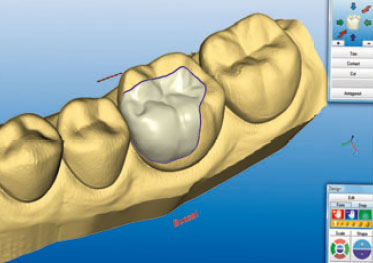
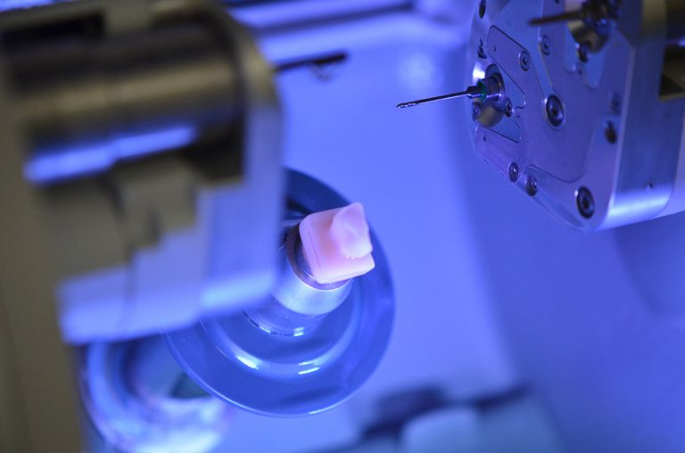
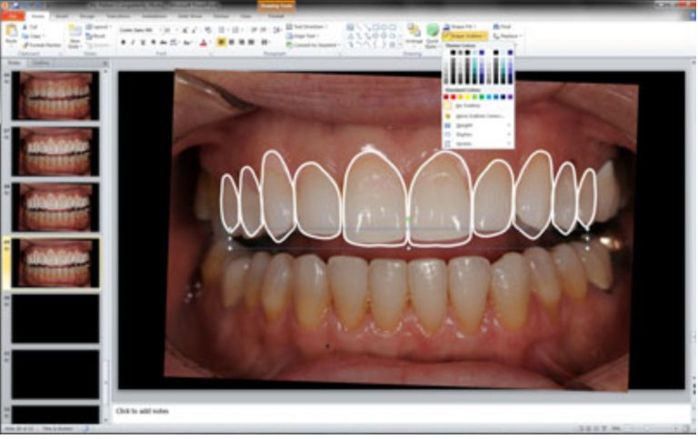

Our facility has state of the art technology and we are on the forefront of the latest clinical techniques. We use low dosed digital x-rays, can create digital 3D images of your jaw (this technique is called conebeam imaging), and are able to create a crown while you are in the office! This technology allows me to digitally plan your smile and show you what your mouth will look like before I do any procedures.
The digtal imaging I use is really cool. We actually use two forms of digital imaging:
With one tool, we use a set of photographs to show the relationship of your teeth to your lips, eyes, and face. This helps assure that the final dentistry will look great with your face specifically. It will also helps assure that the dentistry we do will function really well.
Another tool we use is a 3D imaging system to help us carefully plan and design your smile. First, we take a 3D x-ray of your mouth and jaw, and then then use a computer to super impose our dentistry into your mouth before we actually do any procedures. This technique assures that our dentistry will function well and look great. (This technology is similar to the way that movies such as Superman and Lord of the Rings are animated. The difference is that we’re using this technology for a practical purpose: to make your mouth function well and look beautiful!)
We are also able to mill your crowns in-house with a 3D printer. This technology decreases the number of times you have to go to the dentist to finish your procedure.
Using technology has allowed me to make huge leaps forward in the quality of care I can give. But it’s not just the technology that’s important- it’s the fact we know how to use it really well.
If you’re interested in learning more or scheduling an appointment, call us at 207-775-0001 or email us at patientcare@drkerr.com. Our office is located in Portland, Maine.


